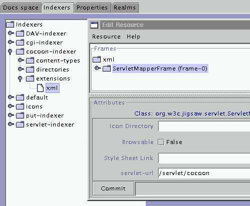

This Page
Download
CLASSPATH
Servlet.properties
Xml mapping
Documentation
Jigsaw Links
JigAdmin
Servlet Tutorial
JSP Configuration
Indexers
Cocoon Links
Cocoon Site
Download Cocoon
User Guide
Cocoon is a servlet, so we only have to install it and configure Jigsaw to "associate" all xml documents to that servlet.
CLASSPATH=$CLASSPATH:\
[cocoon-home]/lib/xerces.jar:\
[cocoon-home]/lib/stylebook.jar:\
[cocoon-home]/lib/fop.jar:\
[cocoon-home]/bin/cocoon.jar:\
[cocoon-home]/lib/xalan.jar:\
[cocoon-home]/lib/turbine-pool.jar[jigsaw-home]/Jigsaw/Jigsaw/config/servlet.properties
Add the lines:
#COCOON servlet.cocoon.code=org.apache.cocoon.Cocoon servlet.cocoon.description=The Cocoon Servlet servlet.cocoon.initArgs=properties=[cocoon-home]/conf/cocoon.properties servlet.cocoon.icon=burst.gif
So, setup the indexer with JigAdmin (eg: cocoon-indexer). Under the "extensions" node add the "xml" extension using a FileResource associated to a ServletMapperFrame. Then, in the ServletMapperFrame, set the "servlet-url" field to the Cocoon Servlet URI (eg: /servlet/cocoon).

Note: don't forget to associate the cocoon-indexer to the top level directory resource of your cocoon space.